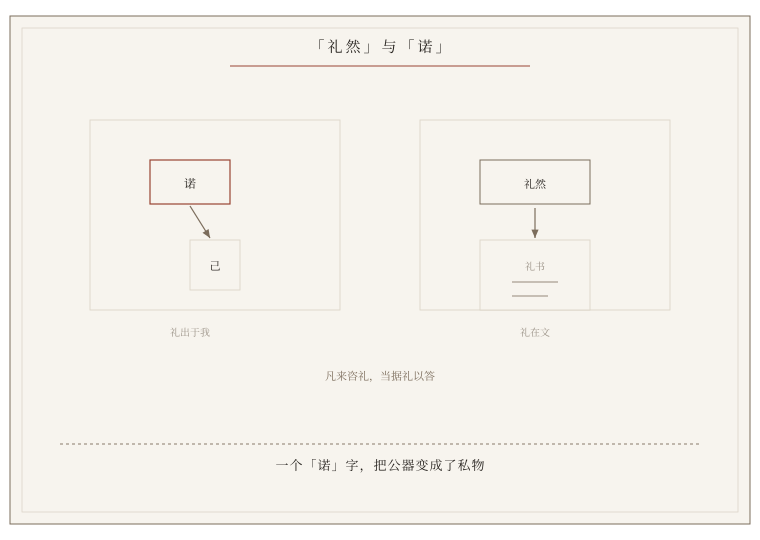

檀弓上 · 三·八十九 · 第 292 课
司士賁告於子游曰：「請襲於床。」子游曰：「諾。」縣子聞之，曰：「汰哉，叔氏！專以禮許人。」
说什么事：司士贲向子游请示，要把袭礼改在床（上进行）。子游说：「可以。」县子听说了，说：「自大啊，叔氏！拿礼当自己的东西许给人。」
落在哪一层：答礼之体。论「礼然」与「诺」一字之差。
为何编在此位：上节论丧具之量，此节论答礼之辞。一论办什么，一论怎么说，皆见礼之为公器。
【经】司士賁告於子游曰：「請襲於床。」子游曰：「諾。」縣子聞之，曰：「汰哉，叔氏！專以禮許人。」
【注】時失之也，禮：唯始死廢床。當言「禮然」，言「諾」，非也。叔氏，子游字。汰，自矜大。
【疏】此一节论不可以礼许人之事。案《丧大记》，始死废床，至迁尸及袭皆在于床。当时失礼，袭在于地，故司士贲告子游。子游知袭在床为是，故以许诺之。县子讥之：凡有来咨礼事，当据礼以答之；今子游不据前礼以答之，专辄许诺，如似礼出于己，是自矜大，故县子闻而讥之曰「汰哉」。当言「礼然」，言「诺」，非礼也。
司士贲 人名，司士其官，贲其名。注「贲音奔，人名」。
袭 为死者穿衣。始死废床，迁尸于床，然后袭。
请袭于床 请示让袭礼在床（上进行）。时人失礼，袭在地上。
诺 允诺、许可。这一个字是全节的关节。
汰 自矜大。注「汰，自矜大」。本又作「大」，音泰。
叔氏 子游的字。
专以礼许人 专擅拿礼去许给人。专，专辄。
司士贲向子游请示说：「请让袭礼在床（上）行。」子游说：「好。」县子听说了，说：「自大啊叔氏！拿礼当自己的东西许人。」
此节只有一问一诺一讥，讲的却是一个极精的语言问题。
司士贲问的是一件礼事：袭当在床上还是在床上以外？子游答的内容是对的——疏说「子游知袭在床为是」，《丧大记》正是如此。
错在答的形式。他只说了一个「诺」。
注说：「当言『礼然』，言『诺』，非也。」
「礼然」是说：礼本来就是这样，你去查礼。说这话的人，把自己放在礼的转述者位置上。 「诺」是说：我准了，你可以这样办。说这话的人，把自己放在了礼的授予者位置上。
一字之差，礼从公器变成私物。
第一层 「诺」这个字为什么会出事 「诺」是上位者对下位者的许可，是主人对请托者的应允。子游本是同僚、朋友，并无许可之权。他说「诺」，就等于把一条公共的礼，说成了自己手里可以批的东西。
县子的讥语里有两个关键词：「专」与「许」。专，是没有授权而自任；许，是把公共的准驳权据为己有。两个字合起来，就是「自矜大」。
第二层 礼的答法有定式 疏把这个定式说出来：「凡有来咨礼事，当据礼以答之。」——有人来问礼，要引礼来答，不要用己意来答。这句是汉儒解经的口诀，也是儒家论「礼」与「己」分界最清楚的一句。
礼的权威在文，不在人。答礼者只能作证，不能作主。
第三层 为什么答对了内容也算错 这是此节最扎人的地方。子游的内容完全正确，而且是当时少数知道正礼的人。但内容对，形式错了，仍然被讥为「汰」。因为形式的错会带来一种后果：下一次，别人就会来问子游，而不是去查礼。礼的公共性一旦转到某个人身上，礼就开始衰。
第四层 与 278、286 合看 278 有子以「有为言之」把话归位；286 记礼者以「鲁礼之末失」把俗归位；此节县子以「当言礼然」把答归位。三处都是同一件事：把话、把俗、把答，都送回礼那里去。
与今日何干 今人遇人问规矩，常答「可以」「没事，就这样吧」。这一句「可以」，就把规矩变成了自己的恩准；对方下次还会来问你，不会去查规矩。此节给的说法只有四个字：礼是这样。四个字里没有我。
| 左 | 右 |
|---|---|
| 请袭于床 | 一件礼事之问 |
| 子游曰诺 | 形式之失 |
| 当言礼然 | 礼在文，不在我 |
| 专以礼许人 | 县子之讥 |
| 汰，自矜大 | 自居于授礼之位 |
| 据礼以答 | 答礼之定式 |
| 内容对而形式错 | 仍为汰 |
| 礼为公器 | 一字之差即私 |
画一间堂屋，视点平。堂中一张矮床（空着，床上铺一层素席）。床前立着两人：一人（深衣、侧身、拱手作请示状），一人（深衣、正面、抬手作应允状）。两人之间地上摊着一卷礼书（展开一半，另一半仍卷着）。堂角另立第三人（深衣、背向、只画侧影），头微摇。不写文字、不画人面细节。赭色只用在矮床上那层素席的席边，与地上那卷礼书未展开的卷端。
